Gallery
CPSC 645/VIZA 675 Geometric Modeling Course Project
by Ryan Zesch
Below is a gallery of renders of ray traced deformable SDFs.

A ray traced deformed bunny, rendered with 1024x1024 pixels and 100 rays per pixel in 6 hours, using a dense grid SDF representation.
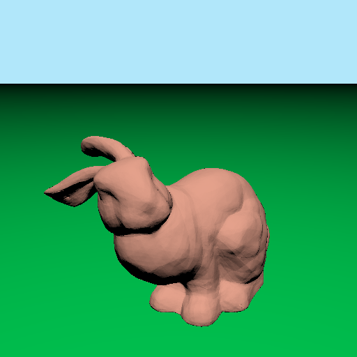
The bunny rendered using the exact learned SDF as the distance function.
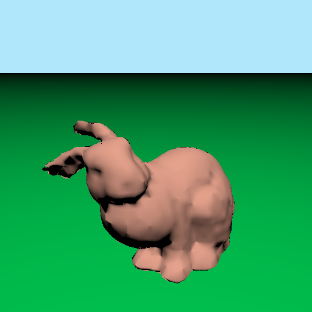
The bunny rendered using a sparse octree with trilinear interpolation between SDF sample points.

The bunny rendered using a dense grid with trilinear interpolation between SDF sample points.
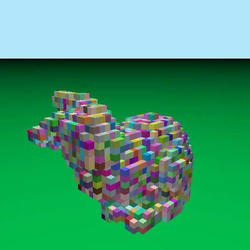
The bunny rendered using as voxels of an octree.
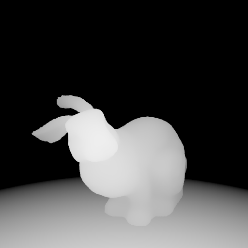
The bunny rendered as a depth map.
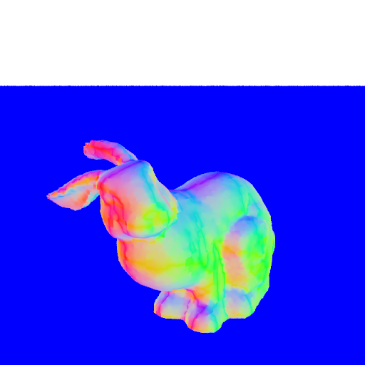
The bunny rendered as a normal map.
The first few learned level sets of the deformed bunny SDF.
The bunny continuously deforming between three training poses by linearly interpolating the input deformation code.
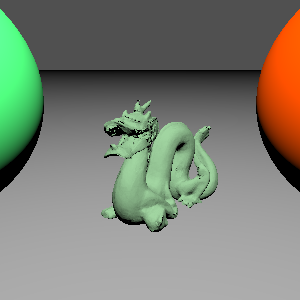
A learned dragon in an undeformed pose.
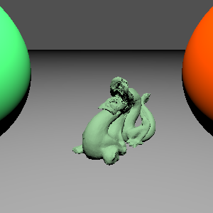
A learned dragon in a second pose, deformed to a training pose using the training pose's deformation code.
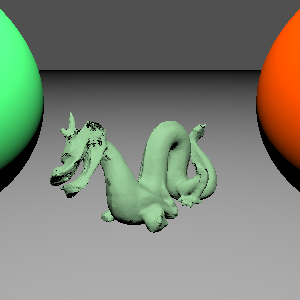
A learned dragon in a third pose, deformed to a training pose using the training pose's deformation code.
A bar deforming between multiple training poses by interpolating the deformation code. The training deformations are as seen below.
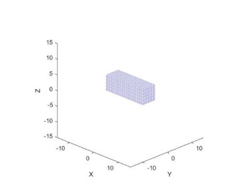
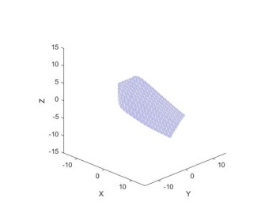
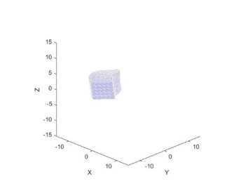
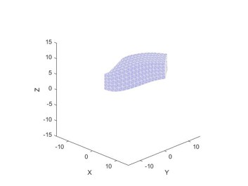
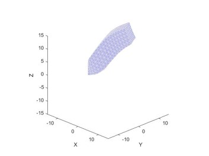